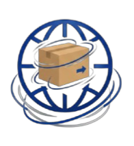

Transporte Terrestre
Gerenciamento completo de frotas com rastreamento contínuo, paradas monitoradas e métricas estratégicas.

GeoSync ContatoPlataforma Inteligente v2.4
Monitore frotas, cargas e rotas com inteligência preditiva. Reduza custos operacionais e aumente a precisão das entregas.
Explorar o projetoSobre a plataforma
A GeoSync é uma plataforma inteligente que conecta sua operação de ponta a ponta. Acompanhe veículos e cargas com visibilidade em tempo real, antecipe falhas com inteligência preditiva e leve a máxima eficiência para toda a cadeia de suprimentos.

Módulos do sistema
Gerenciamento completo de frotas com rastreamento contínuo, paradas monitoradas e métricas estratégicas.

Controle integrado de estoques e galpões com organização e rastreabilidade.

Localização atualizada, histórico de trajetos e identificação de paradas durante todo o percurso.

Dispositivos IoT coletam automaticamente as condições da operação e se comunicam entre si.
Informações centralizadas, visualização simplificada e monitoramento contínuo.
Análise de localização, velocidade, paradas e rotas para destacar o que merece atenção.
Funcionamento
Dispositivos, sistemas e usuários fornecem informações sobre o transporte e as mercadorias.
Os dados são organizados e analisados para apresentar uma visão clara da operação.
O gestor acompanha as informações e identifica ocorrências durante o transporte.
Monitoramento proativo
Identifique situações que podem comprometer o prazo planejado.
Receba alertas sobre mudanças no percurso planejado.
Acompanhe paradas que ultrapassem o tempo esperado.
Visão organizada dos veículos em operação.
Acompanhe cada etapa do transporte da mercadoria.
Centralize informações relevantes para facilitar a tomada de decisão.
Quem faz o GeoSync
Estudantes do curso Técnico em Desenvolvimento de Sistemas do SENAI, reunindo aprendizado e prática no GeoSync.
Vamos conversar